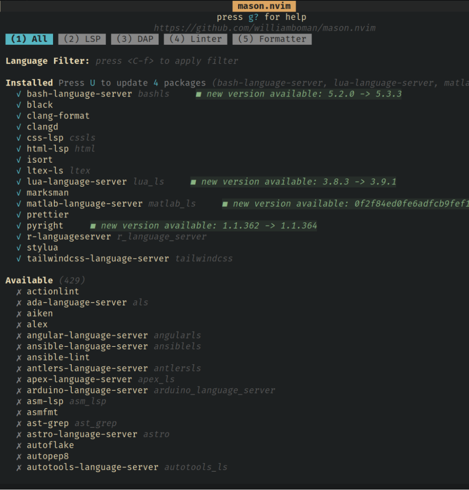
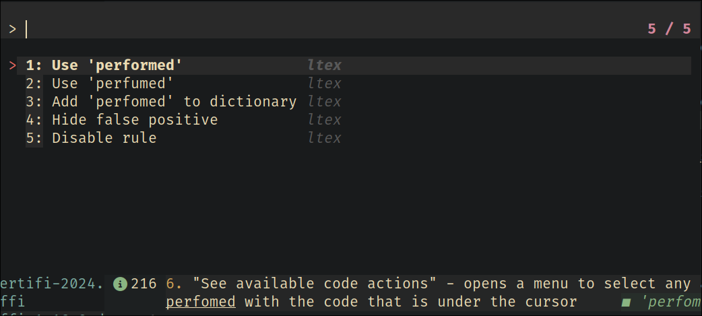
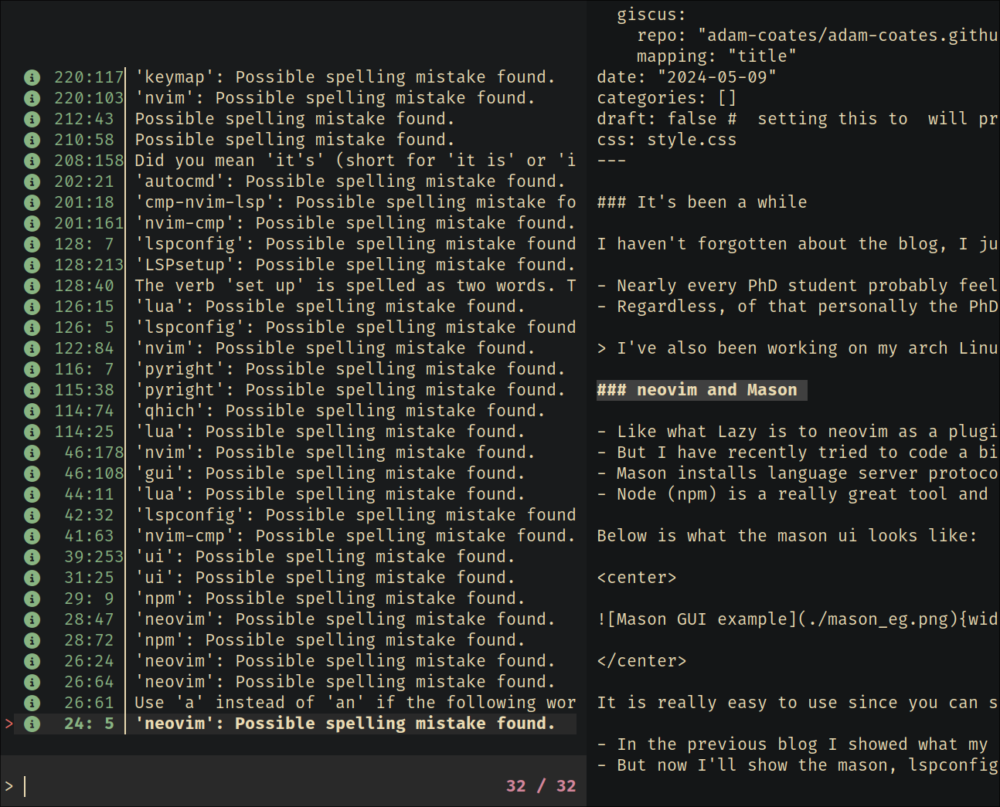
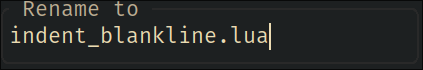

It’s been a while
I haven’t forgotten about the blog, I just haven’t had much time lately to be able to think about writing the 2nd part from the previous blog.
- Nearly every PhD student probably feels the same that there is not enough hours in the day to complete what they want to get completed
- Regardless, of that personally the PhD is progressing well and a lot of my time has been focused towards that.
I’ve also been working on my arch Linux setup recently too and there will be many blogs to follow about that
neovim and Mason
- Like what Lazy is to neovim as a plugin manager. Mason is a neovim plugin that manages LSPs, linters, formatters and debug adapters (since I don’t have any debug adapters or linters installed right now this blog will skip over them).
- But I have recently tried to code a bit in c++ and there is a decent debug adapter for that (so debug adapters I might mention later)
- Mason installs language server protocols on neovim and does so using npm.
- Node (npm) is a really great tool and really works well in downloading LSPs and allowing them to work.
Below is what the mason ui looks like:

It is really easy to use since you can scroll through the available list of LSPs, linters, formatters and debug adapters to be able to install the ones that you want to use. However, there is a bit more going on in the background than just this simple ui.
- In the previous blog I showed what my configuration was for nvim-cmp
- But now I’ll show the mason, lspconfig and the dressing and formatting parts of the config
Mason.lua
As mention above, mason is a great gui to be able to install and manage external tools to interface with nvim.
return {
"williamboman/mason.nvim",
dependencies = {
"williamboman/mason-lspconfig.nvim",
"WhoIsSethDaniel/mason-tool-installer.nvim",
},
config = function()
-- import mason
local mason = require("mason")
-- import mason-lspconfig
local mason_lspconfig = require("mason-lspconfig")
local mason_tool_installer = require("mason-tool-installer")
-- enable mason and configure icons
mason.setup({
ui = {
icons = {
package_installed = "✓",
package_pending = "➜",
package_uninstalled = "✗",
},
},
})- The first part of the code is just to require some of the dependencies that are needed to be able to configure the LSP
- We also require the mason tool installer to be able to install certain formatters
mason_lspconfig.setup({
-- list of servers for mason to install
ensure_installed = {
"html",
"cssls",
"tailwindcss",
"lua_ls",
"pyright",
"matlab_ls",
"bashls",
"marksman",
"ltex",
"r_language_server",
"clangd",
},
-- auto-install configured servers (with lspconfig)
automatic_installation = true, -- not the same as ensure_installed
})
mason_tool_installer.setup({
ensure_installed = {
"prettier", -- prettier formatter
"stylua", -- lua formatter
"isort", -- python formatter
"black", -- python formatter
"clang-format",
},
})
end,
}- The rest of the mason.lua file contains the LSP servers to install and which formatters to install
- For example we want to ensure that pyright is installed
- pyright is an LSP specific to python language
- We also want to ensure that the formatter ‘black’ is installed for python
- this will ensure that every python file is formatted in the same way
Now we have these LSPs installed we want to be then configure these to work with nvim and to ensure that they show up correctly in our completion menu
lspconfig.lua
The lspconfig file is really used to set up each LSP since each LSP has its own setup requirements e.g. LSPsetup
Put simply though there is a basic kind of setup that each requires and that is that the LSP should attach to buffers (fancy name for currently opened file) that are relevant for it and to enable the capabilities of the LSP
return {
"neovim/nvim-lspconfig",
event = { "BufReadPre", "BufNewFile" },
dependencies = {
"hrsh7th/cmp-nvim-lsp",
{ "antosha417/nvim-lsp-file-operations", config = true },
},
config = function()
-- import lspconfig plugin
local lspconfig = require("lspconfig")
-- import cmp-nvim-lsp plugin
local cmp_nvim_lsp = require("cmp_nvim_lsp")
local keymap = vim.keymap -- for conciseness
vim.api.nvim_create_autocmd("LspAttach", {
group = vim.api.nvim_create_augroup("UserLspConfig", {}),
callback = function(ev)
-- Buffer local mappings.
-- See `:help vim.lsp.*` for documentation on any of the below functions
local opts = { buffer = ev.buf, silent = true }
-- set keybinds
opts.desc = "Show LSP references"
keymap.set("n", "gR", "<cmd>Telescope lsp_references<CR>", opts) -- show definition, references
opts.desc = "Go to declaration"
keymap.set("n", "gD", vim.lsp.buf.declaration, opts) -- go to declaration
opts.desc = "Show LSP definitions"
keymap.set("n", "gd", "<cmd>Telescope lsp_definitions<CR>", opts) -- show lsp definitions
opts.desc = "Show LSP implementations"
keymap.set("n", "gi", "<cmd>Telescope lsp_implementations<CR>", opts) -- show lsp implementations
opts.desc = "Show LSP type definitions"
keymap.set("n", "gt", "<cmd>Telescope lsp_type_definitions<CR>", opts) -- show lsp type definitions
opts.desc = "See available code actions"
keymap.set({ "n", "v" }, "<leader>ca", vim.lsp.buf.code_action, opts) -- see available code actions, in visual mode will apply to selection
opts.desc = "Smart rename"
keymap.set("n", "<leader>rn", vim.lsp.buf.rename, opts) -- smart rename
opts.desc = "Show buffer diagnostics"
keymap.set("n", "<leader>D", "<cmd>Telescope diagnostics bufnr=0<CR>", opts) -- show diagnostics for file
opts.desc = "Show line diagnostics"
keymap.set("n", "<leader>d", vim.diagnostic.open_float, opts) -- show diagnostics for line
opts.desc = "Go to previous diagnostic"
keymap.set("n", "[d", vim.diagnostic.goto_prev, opts) -- jump to previous diagnostic in buffer
opts.desc = "Go to next diagnostic"
keymap.set("n", "]d", vim.diagnostic.goto_next, opts) -- jump to next diagnostic in buffer
opts.desc = "Show documentation for what is under cursor"
keymap.set("n", "K", vim.lsp.buf.hover, opts) -- show documentation for what is under cursor
opts.desc = "Restart LSP"
keymap.set("n", "<leader>rs", ":LspRestart<CR>", opts) -- mapping to restart lsp if necessary
end,
})Before setting up each LSP the file first requires some dependencies and sets up some key mappings
The dependency cmp-nvim-lsp is used to provide a completion like menu to the LSP and this works well with our previous plugin discussed in the previous blog, nvim-cmp
Next we create an autocmd that runs any time an LSP is loaded and this just ensures that the LSP attaches to the buffer
The key mappings:
“Show LSP references” - shows the references of the LSP under the cursor
“Go to declaration” - jumps to where something is declared, e.g. if the cursor is under a function this will go to where the function is defined (even if it’s defined in a different file)
“Show LSP definitions” - shows the LSP definitions of what’s under the cursor
“Show LSP implementations” - shows how what’s under the cursor can be implemented
“Show LSP type definitions” - shows type definitions under the cursor for example in typescript
“See available code actions” - opens a menu to select any actions that can be performed with the code that is under the cursor
e.g. here I misspelled the word performed

Here the code actions menu is shown, however it is easier for a misspelled word to correct this using nvim built in keymap z= that opens the spelling correction menu
“Smart rename” - rename anything under the cursor, smart renaming can rename functions and if the same function is called in a different file it will also rename that function
“Show buffer diagnostics” - opens up the buffer diagnostics menu and allows the user to cycle through the list to address any errors etc. this shows a menu like fuzzy finder
e.g.

“Show line diagnostics” - same as above but for only the current line
“Go to previous diagnostic” / “Go to next diagnostic” - to jump through the buffer to the next or previous diagnostic
“Show documentation for what is under cursor” - self-explanatory
“Restart LSP” - again self-explanatory sometimes it’s needed to restart the LSP, but this is pretty rare
-- used to enable autocompletion (assign to every lsp server config)
local capabilities = cmp_nvim_lsp.default_capabilities()
-- Change the Diagnostic symbols in the sign column (gutter)
local signs = { Error = " ", Warn = " ", Hint = " ", Info = " " }
for type, icon in pairs(signs) do
local hl = "DiagnosticSign" .. type
vim.fn.sign_define(hl, { text = icon, texthl = hl, numhl = "" })
end
-- configure html server
lspconfig["html"].setup({
capabilities = capabilities,
-- on_attach = on_attach,
})
-- configure css server
lspconfig["cssls"].setup({
capabilities = capabilities,
-- on_attach = on_attach,
})
-- configure tailwindcss server
lspconfig["tailwindcss"].setup({
capabilities = capabilities,
-- on_attach = on_attach,
})
-- configure python server
lspconfig["pyright"].setup({
capabilities = capabilities,
-- on_attach = on_attach,
})
-- configure matlab server
lspconfig["matlab_ls"].setup({
capabilities = capabilities,
-- on_attach = on_attach,
})
-- configure bash server
lspconfig["bashls"].setup({
capabilities = capabilities,
-- on_attach = on_attach,
})
lspconfig["marksman"].setup({
capabilities = capabilities,
-- on_attach = on_attach,
filetypes = { "markdown", "quarto" },
})
lspconfig["clangd"].setup({
capabilities = capabilities,
})
lspconfig["r_language_server"].setup({
capabilities = capabilities,
-- on_attach = on_attach,
settings = {
r = {
lsp = {
rich_documentation = false,
},
},
},
})
lspconfig["ltex"].setup({
capabilities = capabilities,
-- on_attach = on_attach,
settings = {
ltex = {
language = "en-GB",
},
},
})
vim.api.nvim_create_user_command("LtexLangChangeLanguage", function(data)
local language = data.fargs[1]
local bufnr = vim.api.nvim_get_current_buf()
local client = vim.lsp.get_active_clients({ bufnr = bufnr, name = "ltex" })
if #client == 0 then
vim.notify("No ltex client attached")
else
client = client[1]
client.config.settings = {
ltex = {
language = language,
},
}
client.notify("workspace/didChangeConfiguration", client.config.settings)
vim.notify("Language changed to " .. language)
end
end, {
nargs = 1,
force = true,
})
-- configure lua server (with special settings)
lspconfig["lua_ls"].setup({
capabilities = capabilities,
-- on_attach = on_attach,
settings = { -- custom settings for lua
Lua = {
-- make the language server recognize "vim" global
diagnostics = {
globals = { "vim" },
},
workspace = {
-- make language server aware of runtime files
library = {
[vim.fn.expand("$VIMRUNTIME/lua")] = true,
[vim.fn.stdpath("config") .. "/lua"] = true,
},
},
},
},
})
end,
}- Next we define some symbols that the LSP uses for error, warn, hint and info
- Then the configuration comes
- For each of the installed LSPs we have to ensure the default capabilities are enabled
- For Ltex-ls you have to additionally define the language it should use
- ltex-ls is a grammar and spelling checker that is useful when writing latex documents or markdown
- I define here an additional function that allows me to change the language of ltex as and when needed (similar to vim’s
set spelllangcommand) - For the lua lsp it is needed to also ensure that
.vimfiles are included and the paths to where the runtime files might be included
formatting.lua
- formatting is useful to autoformat files
- for instance if we are indenting then the number of tabs or spaces will be the same across all files
return {
"stevearc/conform.nvim",
event = { "BufReadPre", "BufNewFile" },
config = function()
local conform = require("conform")
conform.setup({
formatters_by_ft = {
javascript = { "prettier" },
typescript = { "prettier" },
javascriptreact = { "prettier" },
typescriptreact = { "prettier" },
svelte = { "prettier" },
css = { "prettier" },
html = { "prettier" },
json = { "prettier" },
yaml = { "prettier" },
markdown = { "prettier" },
graphql = { "prettier" },
liquid = { "prettier" },
lua = { "stylua" },
python = { "isort", "black" },
},
format_on_save = {
lsp_fallback = true,
async = false,
timeout_ms = 1000,
},
})
vim.keymap.set({ "n", "v" }, "<leader>mp", function()
conform.format({
lsp_fallback = true,
async = false,
timeout_ms = 1000,
})
end, { desc = "Format file or range (in visual mode)" })
end,
}- Here I require the plugin
- then simply set which formatter to use for each file type
- we set a keymap to carry out the formatting and whether to format when the file is saved
LSP is set up
once all the above is in place LSP and formatting is set up
couple this with my previous blog about completion we now get completion from the LSPs
the LSPs provide completion beyond what snippets can offer because there is a larger range of LSPs available
Below this plugin is optional, but it makes the UI much prettier overall and since this blog and the previous one has been about the completion menu and about LSPs it makes sense to include the plugin below also
dressing.lua
return {
"stevearc/dressing.nvim",
event = "VeryLazy",
}
- dressing provides some of the borders around certain menu ui’s in neovim